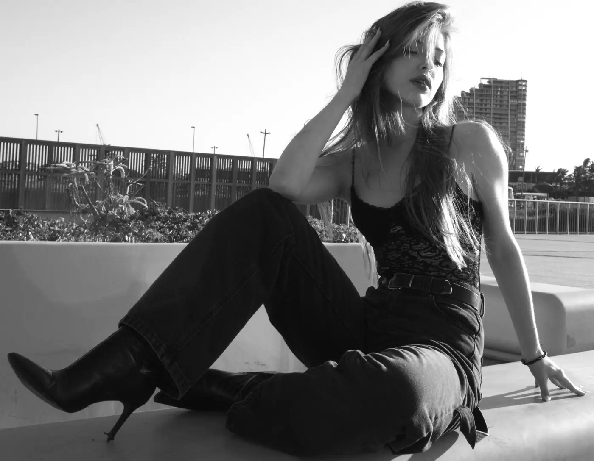

Independent photography Gauteng, SA
Portraits worth keeping.
Real people. Honest moments. Portraits that look beyond the now.

What I photograph
People
Portraits, couples and families, on location and without stiff posing. 17 plates in the portfolio.
See the peoplePlaces
The coast and the city that surround the people I photograph. 3 plates, and nobody in them.
See the placesStories
Sequences built around one setting rather than a single frame. 4 plates so far, in a car park.
See the storiesPortraits / Couples / Families / Social
Selected work


A session, in three steps
01Choose
We pick a location and what to wear together. I send a clothing guide and location suggestions, so you arrive knowing what to expect.
02Shoot
You don’t need to know how to pose. I guide you through the session, from the first frame to the last.
03Receive
Your photographs arrive in a private online gallery with high-resolution and web-optimised downloads. Full delivery takes 7–14 days.
Sessions & pricing
From R800
Starter · Essential · Signature · Social.
50% deposit to book · EFT accepted.